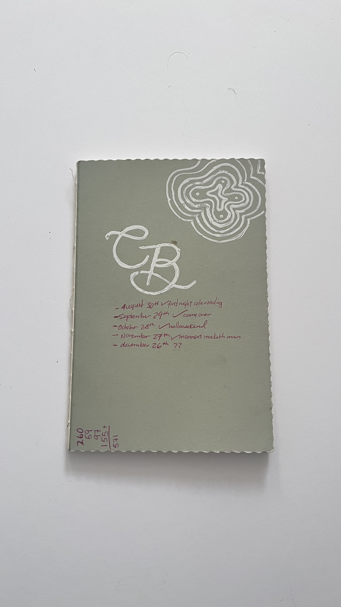

2023

quote here
main text here
Artifact Metadata
| Type | Description |
|---|---|
| Name | |
| Collection | |
| Origin | |
| Date | |
| Location | |
| Condition | |
| Colour | |
| Tags |
Hand-Annotated "CB" Notebook
Looking at this cover is like looking at a countdown. I remember the exact feeling of the pen on this cardstock as I marked each date—August 30th, the first night of cold reading; September 29th; October 28th for Halloweekend. Each checkmark feels like a pulse point of that year.
The 'CB' on the front was more than just a label; it was a brand for that specific era of my life. I look at that final entry for December 26th, followed by those two question marks, and I’m reminded of how the certainty of those first few months eventually gave way to the unknown. The math in the corner, the 571—I don't even need to explain what it was for; just seeing the sum reminds me of the effort and the tallying I was doing back then. This isn't just a notebook; it’s a physical map of where my head was for those four months.
Artifact Metadata
| Type | Description |
|---|---|
| Artifiact ID | LIT-JRN-2023-CB |
| Title | Hand-Annotated "CB" Notebook |
| Category | Literature / Personal Records |
| Date Range | August 30 - December 26, 223 |
| Physical Description | A slim, olive-drab or sage-green notebook with a textured, scalloped right edge. The cover features hand-drawn elements in white ink: a large stylized "CB" monogram and a concentric, cloud-like doodle in the upper right. The lower half contains five dated entries written in red ink, accompanied by checkmarks and brief descriptions. A vertical column of numbers (totaling 571) is written in the bottom left corner. |
| Condition | Good; some minor fraying along the spine and light surface wear. The ink is well-preserved and legible. |